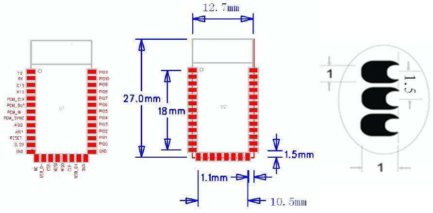
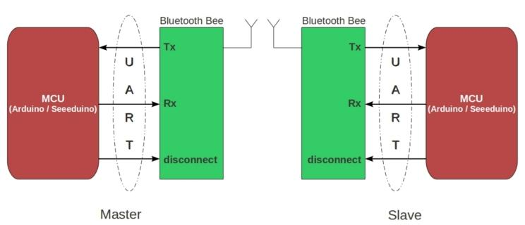
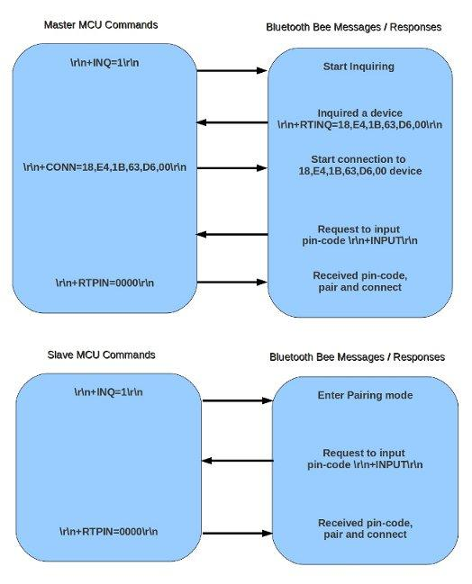

This module is an easy to use Bluetooth SPP (Serial Port Protocol) module, designed for transparent wireless serial connections.
The Serial port Bluetooth module is fully qualified Bluetooth V2.0+EDR (Enhanced Data Rate) 3Mbps Modulation with complete 2.4GHz radio transceiver and baseband. It uses CSR Bluecore 04-External single chip Bluetooth system with CMOS technology and with AFH(Adaptive Frequency Hopping Feature). It has a footprint as small as 12.7mmx27mm. Hopefully it will simplify your overall design/development cycle.
Model: WLS123A1M
http://www.seeedstudio.com/depot/images/large/product/newblue_LRG.jpg
9600,19200,38400,57600,115200,230400,460800.
and blue led blinks 1time/2s in interval. While disconnected only blue led blinks 2times/s.

| Pin | # | Pad Type | Description |
|---|---|---|---|
| PIO11 | 34 | Bi-Direction | Programmable input/output line |
| PIO10 | 33 | Bi-Direction | Programmable input/output line |
| PIO9 | 32 | Bi-Direction | Programmable input/output line |
| PIO8 | 31 | Bi-Direction | Programmable input/output line |
| PIO7 | 30 | Bi-Direction | Programmable input/output line |
| PIO6 | 29 | Bi-Direction | Programmable input/output line |
| PIO5 | 28 | Bi-Direction | Programmable input/output line |
| PIO4 | 27 | Bi-Direction | Programmable input/output line |
| PIO3 | 26 | Bi-Direction | Programmable input/output line |
| PIO32 | 25 | Bi-Direction | Programmable input/output line |
| PIO1 | 24 | Bi-Direction TX EN | Programmable input/output line, control output for PA(if fitted) |
| PIO0 | 23 | Bi-Direction RX EN | Programmable input/output line, control output for LNA(if fitted) |
| GND | 13,21,22 | VSS | Ground pot |
| USB± | 15,20 | Bi-Directional | |
| SPI_CLK | 19 | CMOS input with weak internal pull-down | Serial peripheral interface clock |
| SPI_MISO | 18 | CMOS input with weak internal pull-down | Serial peripheral interface data Output |
| SPI_MOSI | 17 | CMOS input with weak internal pull-down | Serial peripheral interface data input |
| SPI_CSB | 16 | CMOS input with weak internal pull-up | Chip select for serial peripheral interface,active low |
| NC | 14 | ||
| 3.3VCC | 12 | 3.3V | Integrated 3.3V(+)supply with on-chip linear regulator output within 3.15-3.3V |
| RESETB | 11 | CMOS input with weak internal pull-up | Reset if low. input debouncde so must be low for>5MS to cause a reset |
| AIO1 | 10 | Bi-Direction | Programmable input/output line |
| AIO0 | 9 | Bi-Direction | Programmable input/output line |
| PCM_SYNC | 8 | Bi-Direction | Synchronous PCM data strobe |
| PCM_IN | 7 | CMOS Input | Synchronous PCM data input |
| PCM_OUT | 6 | CMOS output | Synchronous PCM data output |
| PCM_CLK | 5 | Bi-Direction | Synchronous PCM data clock |
| UART_RTS | 4 | CMOS output tri-stable with weak internal pull-up | UART request to send, active low |
| UART_CTS | 3 | CMOS input with weak internal pull-down | UART Data input |
| UART_RX | 2 | CMOS output,tri-stable with weak internal pull-down | UART Data input |
| UART_TX | 1 | CMOS output,tri-stable with weak internal pull-up | UART Data output |


1. Set working MODE
| \r\n+STWMOD=0\r\n | Set device working mode as client (slave). Save and Rest. |
| \r\n+STWMOD=1\r\n | Set device working mode as server (master). Save and Rest. |
Note: \r\n is necessary for operation and the value of are 0x0D 0x0A in Hex. \r and \n represent carriage-return and line-feed(or next line),
2.Set BAUDRATE
| \r\n+STBD=115200\r\n | Set baudrate 115200. Save and Rest. |
| Supported baudrate: 9600, 19200,38400,57600,115200,230400,460800. | |
3. Set Device NAME
| \r\n+STNA=abcdefg | Set device name as “abcdefg”. Save and Rest. |
4. Auto-connect the last paired device on power
| \r\n+STAUTO=0\r\n | Auto-connect forbidden. Save and Rest. |
| \r\n+STAUTO=1\r\n | Permit Auto-connect. Save and Rest. |
5. Permit Paired device to connect me
| \r\n+STOAUT=0\r\n | Forbidden. Save and Rest. |
| \r\n+STOAUT=1\r\n | Permit. Save and Rest. |
6. Set PINCODE
| \r\n +STPIN=2222\r\n | Set pincode “2222”, Save and Rest. |
7. Delete PINCODE(input PINCODE by MCU)
| \r\n+DLPIN\r\n | Delete pincode. Save and Rest. |
8. Read local ADDRESS CODE
| \r\n+RTADDR\r\n | Return address of the device. |
9. Auto-reconnecting when master device is beyond the valid range (slave device will auto-reconnect in 30 min when it is beyond the valid range)
| \r\n+LOSSRECONN=0\r\n | Forbid auto-reconnecting. |
| \r\n+LOSSRECONN=1\r\n | Permit auto-reconnecting. |
1. Inquire
| a) Master | |
| \r\n+INQ=0\r\n | Stop Inquiring |
| \r\n+INQ=1\r\n | Begin/Restart Inquiring |
| b) Slave | |
| \r\n+INQ=0\r\n | Disable been inquired |
| \r\n+INQ=1\r\n | Enable been inquired |
When +INQ=1 command is successful, the red and green LEDS blink alternatively.
2. Bluetooth module returns inquiring result
| \r\n+RTINQ=aa,bb,cc,dd,ee,ff;name\r\n | Serial Bluetooth device with the address “aa,bb,cc,dd,ee,ff” and the name “name” is inquired |
3. Connect device
| \r\n+CONN=aa,bb,cc,dd,ee,ff\r\n | Connect to a device with address of "aa,bb,cc,dd,ee,ff” |
4. Bluetooth module requests inputting PINCODE
\r\n+INPIN\r\n
5. Input PINCODE
| \r\n+RTPIN=code\r\n | |
| Example: RTPIN=0000 | Input PINCODE which is four zero |
6. Disconnect device Pulling PIO0 high will disconnect current working Bluetooth device.
7. Return status \r\n+BTSTA:xx\r\n
xx status:
(Note: This is not a command, but the information returned from the module after every command)
Please list your question here:
If you have questions or other better design ideas, you can go to our forum or wish to discuss.
Click here to buy: Serial port bluetooth module (Master/Slave)
This documentation is licensed under the Creative Commons Attribution-ShareAlike License 3.0 Source code and libraries are licensed under GPL/LGPL, see source code files for details.
Links to external webpages which provide more application ideas, documents/datasheet or software libraries
If you want to make some awesome projects by Serial port bluetooth module, here's some projects for reference.

This is an interesting demo make by Arduino and Grove. This is a complete tutorial about how to control multiple servo motors from android app.
Born with the spirit of making and sharing, that is what we believe makes a maker.
And only because of this , the open source community can be as prosperous as it is today.
It does not matter what you are and what you have made, hacker, maker, artist and engineers,
as long as you start sharing your works with others,
you are being part of the open source community and you are making your contributions .
Now share you awesome projects on with us on Recipe, and win a chance to become the Core User of Seeed.
Get more information about Core User please email to: recipe@seeed.cc
{kind=link}